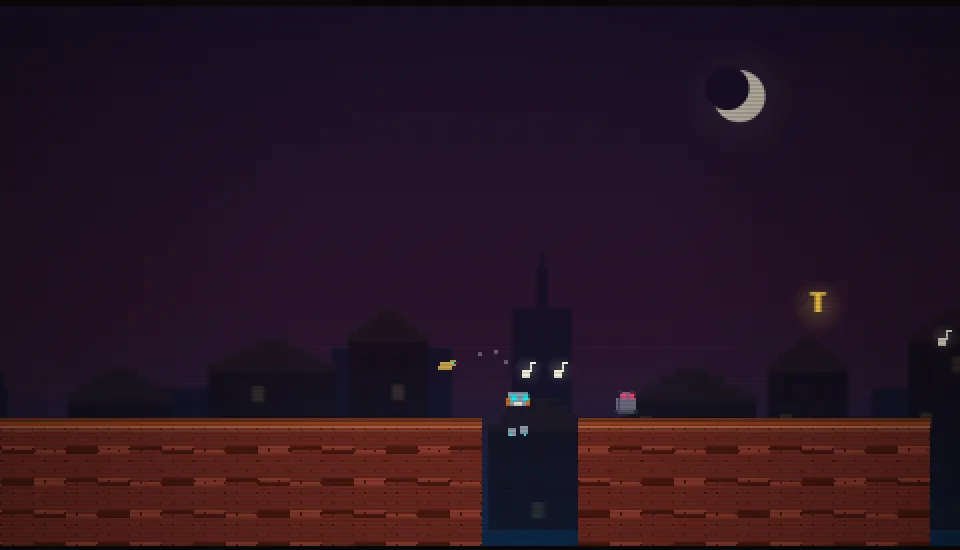
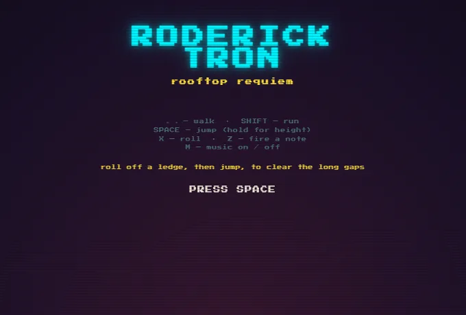

robot composer on 1810s rooftops · run, roll, stomp · find T-R-O-N
A side-scrolling platformer about a robot composer on the rooftops of an 1810s Dutch city. Run, roll, stomp and fire musical notes, find the letters T-R-O-N, and reach the lit door.
The levels are built by hand, with chimney draughts, bell cannons and coal trolleys in the way.

pipx install magmacrunch-roderick-trongame by magmacrunch media
music "Roderick Tron" by Jimmi, from the album JIMMI